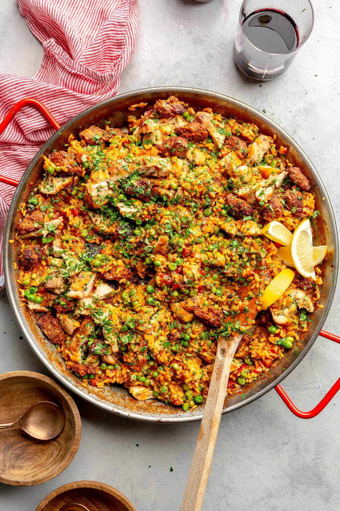

Paella Recipe

Description
Chicken and Prawn Paella is a vibrant and flavorful Spanish dish that combines tender chicken, succulent prawns, and aromatic rice cooked together with a variety of vegetables and seasonings.
Ingredients
Chicken Seasoning
- Olive oil
- Smoked Paprika
- Garlic Granules
- Onion Salt
- Salt Flakes
- Black Pepper
Paella
- Olive oil
- x3 chicken breast, cut into bite-sized pieces
- 225g Spanish chorizo, diced
- 400g large, raw prawns
- 1 red pepper, diced
- 1 yellow pepper, diced
- 4-6 cloves garlic, finely chopped
- 250g paella rice
- White wine or white wine vinegar
- 400ml chicken stock
- 350ml fish stock
- Paellermo seasoning
- 400g can of butter beans
- 100g frozen peas
- Lemon
- Fresh bread
Method
- Dice the chicken, add to bowl, cover in all the chicken seasoning and mix together, set to one side.
- Heat a le cruiset pan (or something similar), add a generous glug of oil and fry the chicken until brown, then remove
- Remove the chicken, set to one side and throw in peppers to pan, fry for 3-4min until soft
- Add garlic and cook until fragrant
- Add diced chorizo and cook for 1-2mins until the oil starts to leak
- Throw in the rice and mix, add a splash of white wine and cook until the liquid has evaporated and the rice edges are translucent, should be 1-2mins
- Add the paellermo seasoning and stir. Let it simmer for 20-25mins stirring occasionally
- When it has 5mins to go, add frozen peas and butter beans and stir in. Add a pinch more salt if needed.
- Slice up lemon into wedges, add to bowl and serve with fresh bread